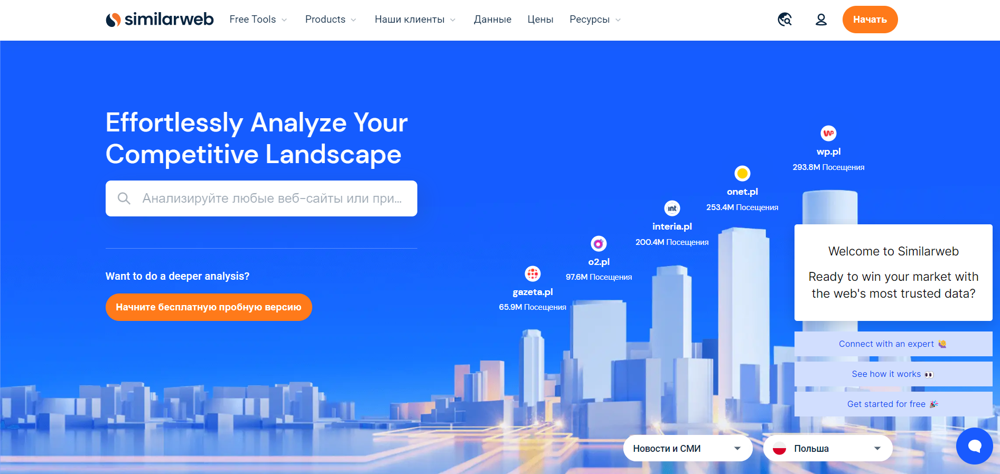
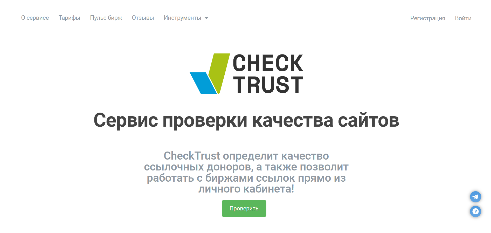
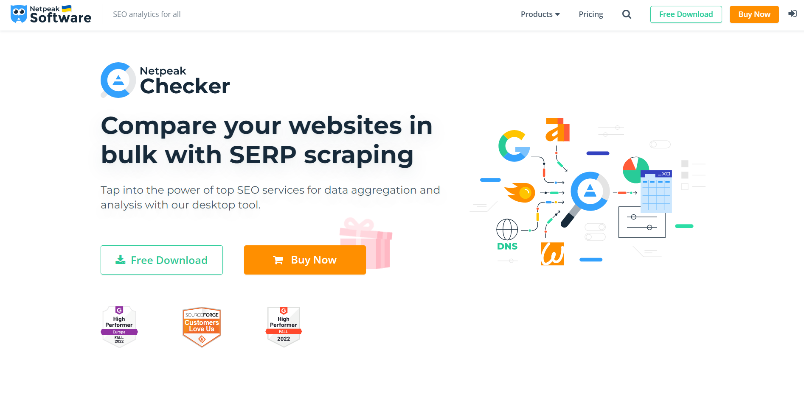

Доповнення
Мікророзмітка
Додатковий інструмент для апргрейду вашого сніпету, що може поліпшити шанси на те, що клієнт зацікавиться саме вашим посиланнямТипи міророзмітки:
- Мікродані;
- JSON (ліпший варіант);
- RDFa.
- Опис товару;
- Зображення (наприклад логотип);
- Зірковий рейтинг;
- Контакти;
- Хлібні крихти;
- Відгуки;
- Адресу;
- Рецепти;
- Час і дату;
- Наявність товару;
- Фотографію.
Ось ще додаткові ресурси, для відстежування + прискорення
завантаження сайту:

Посилальна маса
Тут я хочу конкретно зачепити тему зовнішнього нарощування посилальної маси. Це допомагає у ранжуванні сайту, а фактично це просто посилання на ваш сайт на інших ресурсах, але де брати ці самі ресурси, окрім соц мереж звичано, з ними усе зрозуміло, або сам публікуєш посилання, або купляєш рекламу. Тут не дуже все відрізняється, але є декілька цікавих пропозицій як саме можна фінансово та без фінансів інвестувати у зовнішні посилання:
Посилання-донор - посилання на
іншому ресурсі, яке буде вести саме на ваш сайт.
Ось інструкція як підібрати/знайти посилання-донорів:
- Орієнтуючись на ваш кінцевий бюджет вам треба підібрати оптимальний варіант для отримання посилань-донорів:
- Підібрати конкретні домени для роботи з уроахуванням показників якості.
Що треба враховувати при пошуку посилань-донорів:
- Регіон та домен донору: чи співпадає він з тим, що вам потрібно. Виключення: доменні зони .com .net .org. Ось сайт для перевірки такого типу інформації: 
- Спамність донора: 
- Також всіляку таку статистику можна дивитися у Serpstat, про нього теж не забуваемо.
Перевірка показників якості донорів
- Видимість та відвідувальність (перевірити можна на SerpStat);
- DR/SDR = 0;
- перевірка IP донорів (якщо однакові - спам): 
- Також треба звертати увагу на схожість доменів, бо це може бути показником спамності також.